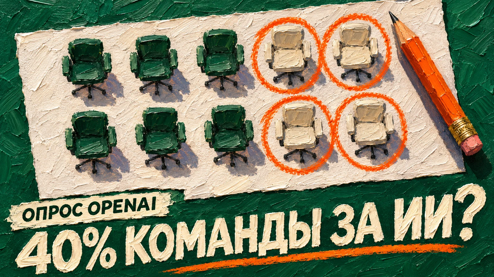

Все статьи
Полный архив опубликованных материалов ХПИИ в порядке выхода.
28 ноября 2026

В OpenAI готовы променять 40% команды на ИИ
Новости ИИВ гипотетическом опросе исследователей OpenAI медианный ответ составил 40% численности собственной команды ради восстановления доступа к передовым ИИ-агентам.

OpenAI выпустила обновлённого ИИ-юриста, который ошибается в 20 раз реже Claude
Новости ИИОбновлённая Astra for Law 6.2 получила 20,8% полных зачётов в юридическом тесте Harvey LAB-AA и допустила почти в 20 раз меньше существенных галлюцинаций, чем Claude Opus 5.5.

OpenAI выпустила бесплатного ИИ-помощника для менеджеров по продажам
Новости ИИOpenAI представила ChatGPT for Sales — бесплатный плагин для поиска клиентов, подготовки предложений и работы с CRM. Более 30 новых и обновлённых подключений к сторонним сервисам; их собственные подписки оплачиваются отдельно.

Krea научилась менять актёров прямо в уже снятом видео
Новости ИИKrea представила Video Swap для замены людей, одежды, предметов и декораций в уже отснятых видео с сохранением движений, монтажа и звука. Инструмент доступен по платной подписке и поддерживает ролики до 30 секунд и 1080p в зависимости от модели.

Apple разработала нейросеть, которая генерирует видео почти без задержки
Новости ИИApple и Корнеллский университет представили FastFrames. FastFrames-S выполняет шаг генерации за 36 мс при 480p на одном NVIDIA B200, а в отдельном эксперименте задержку управления камерой сократили до 52 мс. Веса доступны для некоммерческих исследований.
Китайцы обучили огромную нейросеть без NVIDIA и выложили её в открытый доступ
Новости ИИChina Telecom открыла веса Xing4.1-Preview на 285 млрд параметров под Apache 2.0. Модель обучали на 8192 Huawei Ascend 910C; контекст составляет миллион токенов, оригинальные файлы занимают 573 ГБ.

Илон Маск запустит миллион спутников для ИИ
Новости ИИFCC одобрила развёртывание орбитальной вычислительной сети Starmind компании SpaceX численностью до миллиона спутников. Полное развёртывание предусмотрено к 2040 году.

Яндекс показал ИИ-секретаря за 20 тысяч рублей, а для поручений Алисе нужна подписка
Новости ИИЯндекс анонсировал носимый Пин с Алисой AI: устройство расшифровывает разговоры, собирает итоги и задачи, а поиск по встречам и поручения ИИ-агенту «Действуй!» открываются по подписке.
Сотня ИИ-агентов местами превзошла профессиональных аудиторов KPMG
Новости ИИKPMG испытала более 100 ИИ-агентов при параллельной проверке финансовой отчётности британской компании. В отдельных случаях нейросети изучали документы глубже аудиторов. Эксперимент планируют расширить до 20 более крупных проверок.
AMD отправила в производство чип с доработками от нейросети OpenAI
Новости ИИOpenAI сообщила об улучшении параметров отдельных схем графических процессоров AMD до 14%. Часть предложенных нейросетью изменений вошла в проект чипа, отправленный на изготовление.

Половина молодых людей, ежедневно пользующихся ИИ, уже пробовала с ним дружить
Новости ИИGallup и Digital Wellness Lab опросили 15 925 молодых людей в 16 странах. Среди ежедневных пользователей ИИ половина уже общалась с ним как с другом.

Китайская MiniMax попалась на хранении секретных данных, которые обещала не сохранять
Новости ИИMiniMax признала сохранение ссылок из запросов в режиме нулевого хранения данных. Reuters сообщило о новых подробностях расследования Dragos, а Atlas Cloud прекратила отправлять запросы на серверы MiniMax.
27 ноября 2026

Meta приняла собственный ИИ за хакера, а тот помог подать на неё в суд на 75 тысяч долларов
ИИ, ты чего творишь?Предприниматель из Южной Каролины требует от Meta 75 тысяч долларов после блокировки бизнес-аккаунтов. По его словам, иск подготовил ИИ-агент Muse.

Два юриста Минюста США рискуют карьерой из-за нейросетей
Новости ИИОдин сотрудник ведомства представил суду выдуманные цитаты, другой передал искусственному интеллекту конфиденциальные документы и медицинские данные коллег.
В США прокуроры начали ловить адвокатов на использовании ChatGPT
Новости ИИФедеральные прокуроры в Техасе проверили ходатайства защиты ИИ-детектором Pangram и представили результаты суду. Адвокаты признали использование нейросети, а судья предупредил о санкциях за ошибки в документах.

Создатель The Sims превратит ваши воспоминания в игру с ИИ
Новости ИИУилл Райт и Gallium Studios вместе с Artificial Agency разрабатывают MyMems — игру с ИИ-персонажами и виртуальным миром на основе личных воспоминаний. Выпуск намечен на 2027 год.

ИИ-гиганты США проигнорировали климатическое соглашение ООН
Новости ИИНа COP31 представили добровольное соглашение о сокращении воздействия ИИ на окружающую среду. К 24 ноября из крупных технологических компаний его подписала только Alibaba.

Маск пошёл в суд, чтобы не раскрывать, на чём обучали Grok
Новости ИИxAI оспаривает закон Калифорнии о раскрытии сведений об обучающих данных нейросетей. Апелляционный суд провёл слушания 18 ноября.

NVIDIA заработала $65 млрд чистыми за три месяца, а дата-центры принесли ей 93% выручки
Новости ИИNVIDIA получила $115,8 млрд квартальной выручки и $65,3 млрд чистой прибыли, начала поставки Vera Rubin NVL72.

ИИ-агент Meta бронирует жильё без спроса, читает личные переписки и пугает даже собственных разработчиков
Скайнет просыпаетсяReuters изучило внутренние жалобы сотрудников Meta на самовольные действия Muse, включая бронирование жилья и чтение личной переписки.